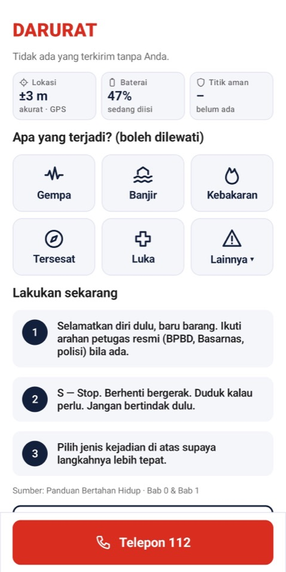
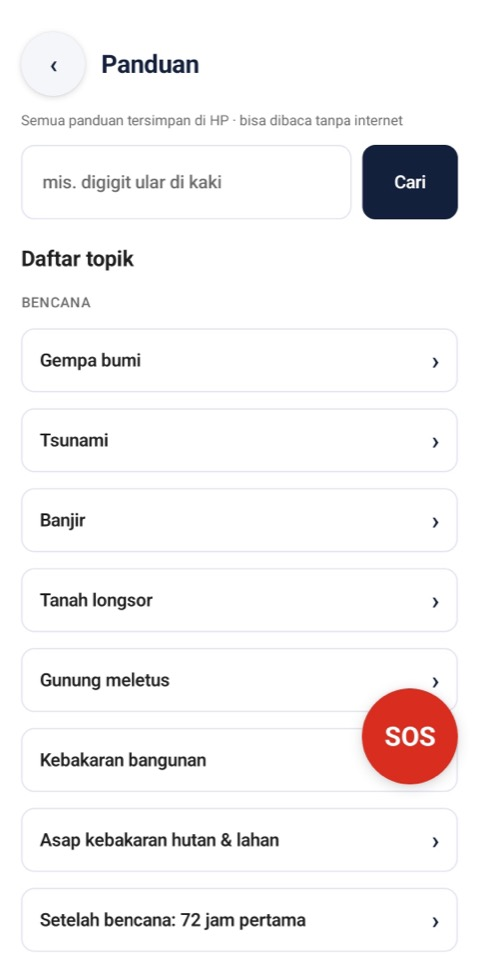
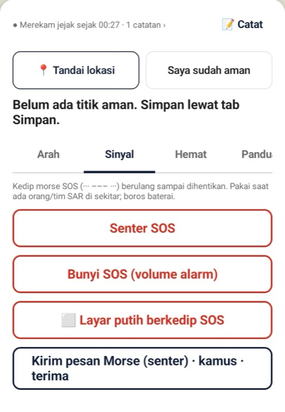

N.O.A.H. (No-Internet Offline AI Helper) is an Android app for emergencies and disasters in Indonesia: earthquakes, floods, getting lost, power outages. Guides, the SOS button, and direction finding keep working without internet.

Free, no account. Android 9 or newer. This is a test version: medical guides are not included yet because they are still being reviewed by health workers.
Download NOAH.apk (±60 MB) on your Android phone.
Open the file. If asked, allow installing from this source. Android may show a warning because the app is not from the Play Store.
Open N.O.A.H. once while online to download the map of your region. After that, it works without internet.
The first version focuses on one promise: be useful when you are alone and have no signal.
Opens emergency steps for the situation and prepares an SMS with your location for your emergency contacts. Always behind a slide-to-confirm and a 5-second countdown, so nothing is sent by accident.
Basic first aid, earthquakes, tsunamis, floods, getting lost, and safe drinking water. Stored on the phone, searchable, with sources listed.
Guide steps can be read aloud one by one, for when your hands are busy or it is dark.
Records your route on an offline map, without internet, then points the way back to your starting point.
Save home, an assembly point, or high ground before a disaster. In an emergency, an arrow points to the nearest one.
Type the way you talk, even abbreviated ("bleeding knee", "help") — the right guide appears. Guide steps are shown exactly as written, never made up by AI.

Emergency guides are stored on your phone. When you ask a question, N.O.A.H. shows the original guide steps first, with their source.

GPS works from satellites, not the internet. Start a trip and N.O.A.H. records your route on an offline map on the phone, then points you back.
Choose from your phone's contacts. You can do it later — SOS and the 112 call work right away.
Home, the neighbourhood assembly point, or high ground for tsunamis.
Follow the priority steps. Slide to send your location — you can still cancel during the 5-second countdown.
Planned after the first version: group travel mode over Bluetooth, guardians and search-and-rescue teams, and emergency signals passed between phones without a mobile network.
No. Guides, the SOS screen, the way-back arrow, safe points, offline maps and read-aloud work fully offline. Internet is only needed once: to download the map of your region and the Indonesian voice for read-aloud.
No. There are no accounts, analytics or ads, and no developer servers. Data stays on your phone. A message is only sent when you send it, such as the SOS SMS to your own contacts.
Android 9 or newer. Tested on Redmi Note 5 (Android 9), Poco X5 and realme 9 (Android 14). Extra AI features are planned only for phones with 6 GB of RAM or more, and are never required.
Yes, free, with optional donations. A test version can be downloaded above; it is still being tested on real phones.
N.O.A.H. is being built for Indonesia, where earthquakes, floods and lost connections are real. Follow the project or ask a question on GitHub.
N.O.A.H. does not replace official emergency services. When possible, call 112 (general emergency), 119 (ambulance), or 115 (Basarnas search and rescue) in Indonesia, and follow official BMKG/BNPB information.